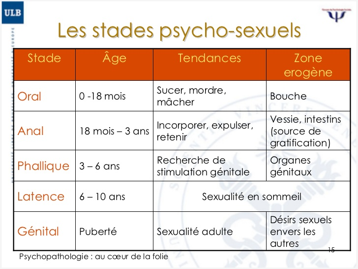

Développement général des enfants
1. Intro
C'est vrai qu'après ce phase quand ils sont adolescents enfants peuvent se liberer
generallement de beacoup de habitudes et choses je pense une idee interesante que nous pouvons
observer est ca - le developpement d'enfants et les habitudes qu'ils obtinnent quand ils sont enfants.
Commençons donc avec le developpement d'enfants commençant par les bébés et terminant par, hmm,
pré-adolescents et un peu de choses sur adolescents.
1. Développement physique des enfants:
Les enfants développent des habiletés en utilisant de muscles dans les bras, les jambes et le torse.
Les mouvements comprennent: la marche, la course, le lancer, le bottement et le levage, et ils sont
étroitement liés à l’équilibre et à la force.
et quand ils sont enfants, parce qu'ils sont heureux de découvrir la monde et ont des émotions
fortes que ne sont pas réprimées, les enfants sont assez mignons et active physiquement.
generallement le développement physique est facile à comprendre et la plupart d'entre nous
le connaissent donc je n'en dirai pas plus sur ca.
2. Le développement psychosexuel:
Psychanalyse d'enfants
Une chose importante est que Freud etais après il avoir rencontré des vétérans de la
Première Guerre mondiale réalisé que experiences traumatisantes pouvent etres le motif
de problemes psychologiques.
C'est important parce que c'est pourquoi nous voulons pas experiences traumatisantes
pour l'enfants et c'est pourquoi bon traitment d'enfants avent une importance.
Sigmund Freud etait le premier à creer une théorie du développement sexuel.
Son théorie décrit cinq stades dans le développement sexuel (que nous pouvons
observer dans l’image): oral, anal, phallique, latence et génital

Le passage par chacun des stades conduit au développement de l'enfant.
En commençant par une stimulation orale au début de la vie, l'absence ou l’hyperstimulation
de que peut conduire à des habitudes liées à la bouche, comme sucer votre langue,
ce que je fais parfois...
maintenant, je dois suce mon doigt, ahem, et je dois continuer, le stade anal:
Au stade anal, Freud croyait que l’objectif principal de la libido était de contrôler les
mouvements de la vessie et des intestins. Le principal conflit à ce stade, c’est la formation
à la toilette — l’enfant doit apprendre à maîtriser ses besoins corporels. Le développement
de ce contrôle conduit à un sentiment d’accomplissement et d’indépendance.
L'importance de ce stade est que si le parents sont trop indulgents l'enfant peux etre plus
desordone plus tard dans sa vie ou si les parents etes plus strictes l'enfant peux etre
trop rigide et obsessive.
Je pense personallement que jusqu'a adolescence c'est probablement vrai parce que ce genre
de chose indique le comportement des parents en général et ce comportament est que dicte
comment les enfants etre au tot dans la vie.
le stade phallique:
Freud a suggéré que pendant le stade phallique, l’objectif principal de la
libido est sur les organes génitaux. À cet âge, les enfants commencent à découvrir
les différences entre les hommes et les femmes.
Et... Freud croyait aussi que les garçons commençaient à regarder leur père comme
un rival pour l'affection de la mère, c'est "Le complexe Oedipe", interesant, oui?
Personallement je ne pense pas que la situation est ca parce que quand je rememorer
quand je etait 5 je ne rememorer pas ca et le evidence empirique est peu pour ce theorie...
mais une chose que nous pouvons disons est que c'est probablement le stade final
de simple enfance, quand problemes de la monde et normes sociales etre pas importantes.
le stade latence
Au cours de cette étape, le surmoi continue de se développer tandis et les
énergies de l’id ( que je pense peux etre descris que: votre moi initial qui
croit qu’il merite abondance et heurexment tout du temps! Si c'est bon ou mal)
est votre decision )
sont supprimées.
Les enfants développent des aptitudes sociales, des valeurs et des relations
avec des pairs et des adultes à l’extérieur de la famille.
Le développement de "l’ego et du superego" contribue à cette période de calme.
La scène commence à peu près au moment où les enfants entrent à l’école et
deviennent plus concernés par les relations entre pairs, passe-temps,
et d’autres intérêts.
La période latente est une période d’exploration dans laquelle l’énergie
sexuelle réprimée ou dormante. Cette énergie est toujours présente,
mais elle est sublimée dans d’autres domaines tels que les activités
intellectuelles et les interactions sociales.
Cette étape est importante dans le développement des compétences
sociales et de communication et de la confiance en soi.
Comme pour les autres stades psychosexuels, Freud croyait que
c’était possible pour que les enfants deviennent obsédés ou "coincés"
dans cette phase.
Freyd croyait aussi que la fixation à ce stade peut entraîner l’immaturité
et l’incapacité de former des bons relations quand tu est un adult.
le stade genital
c'est le stade final du developpement dans ces theories, dans ce stage
une personne développe completement et je pense c'est le stade dans que
departant avec adolescence tu peux te liberer de beacoup des choses
et tu peux decides le futur que tu veux.
Une chose importante est aussi que tes parents doivent te laisser faire
plus de choses sans aide, une bonne opportunité pour developpement personnel
3. Le Developpement Spirituel
commençons donc à la naissance: quand l'enfant pleure souvent au cours du
premier mois d’une manière très différente de ce qui se passera plus tard:
c'est croit que pendant un certain temps le bébé est conscient de que
il vient de naître et sa conscience toujours en un état de choc total, soit
parce qu’il vient de naître sur terre ou comme pour la plupart des gens parce
que dans une vie précédente ils n’ont pas fait les choses bien et ont été re-nés
c'est le theorie au moins
ce premier phase se finir quand le conscience perd sa puissance
apres ce phase l'enfant est lie a ce que ses parents l’aident et ne l'aident pas
à développer jusqu'a l'adolescence quand comment je a dis tu as une opportunite
comme vous aurez plus dans la vie pour etre qui tu veux etre dans la monde.
C'est la finir de le projet-
et, je dois sais apres tout ca si: vous aimez ou detester ce projet!?
bibliographie